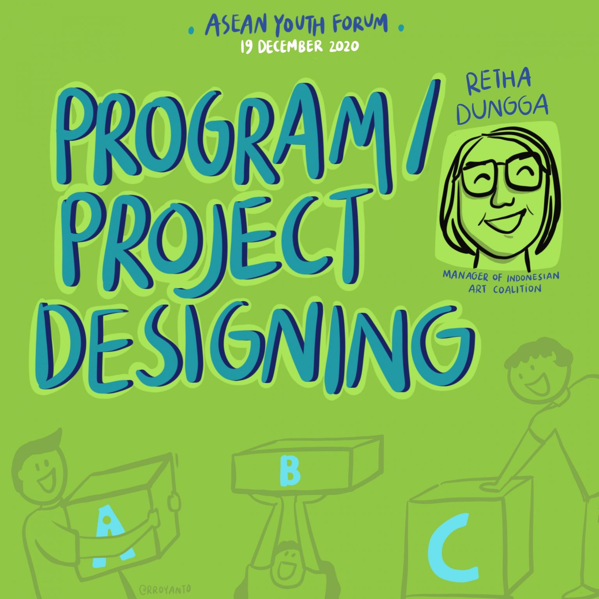
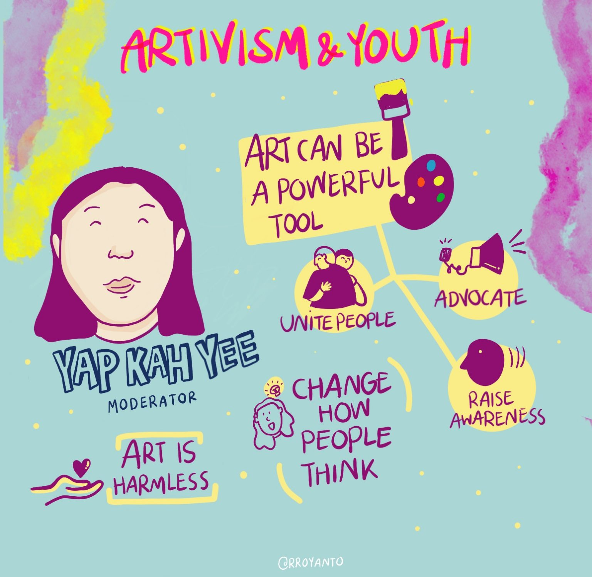
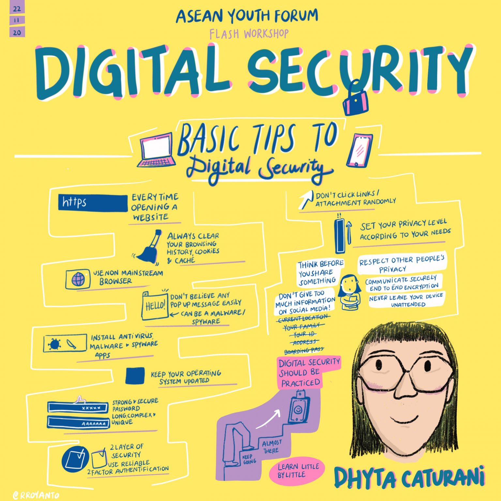
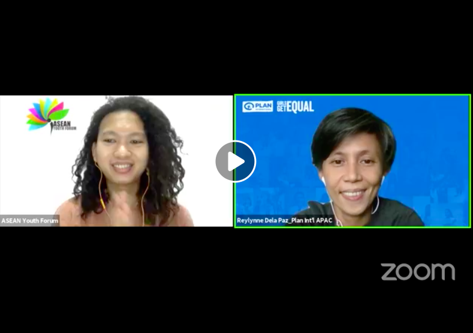

ASEAN Youth Forum adalah sebuah wadah aspirasi bagi para pemuda dari negara-negara anggota ASEAN yang bertujuan untuk meningkatkan kesadaran pemuda tentang isu-isu regional, serta mempromosikan peran pemuda dalam membangun ASEAN yang lebih baik dan lebih berkelanjutan. Forum ini memberikan kesempatan kepada pemuda untuk berbagi gagasan, pengalaman, dan inovasi dalam memecahkan masalah regional, seperti perdamaian, keamanan, kemiskinan, pendidikan, dan lingkungan hidup.
New Activities
[Talk] Selfmade, Youth, Imagining Inclusive Opportunities for Youth with Disabilities
The focus of Youth Talk Show is for young entrepreneurs with disabilities to share their experience and knowledge to the participants who are young people with and without disabilities across Southeast Asia. The event is co-organized by AYF, AGENDA, IFES, and Australian Aid. During the event, the speaker shared how they started their career and the challenges they face. All the speakers expressed that internal challenges are something they need to address first when they first start. The speakers then give their review on the current existing laws in their respective countries and they give some recommendations to the local government to the advancement of entrepreneurship inclusive of persons with disabilities. In the talk, the speakers also share their tips and encouragement for the participants interested in starting their enterprises journey.
UPDATES
Trending Forums About Youth

[Workshop] Digital Security
It is significant to address emerging issues in the vast moving technology-based development era, one of which is digital security. The narrative “youth are digital natives” doesn’t address the diversity of youth sub-population and it does ignore the fact that youth are still unaware of how they can be targeted for cyber security issues. It is also important to capacitate youth with digital security knowledge and skills through workshops / training.

[Talk] Girls and Women Experience Harassment Online
In the Yangon Declaration (2014), we are pursuing and encouraging meaningful participation of marginalized groups, including girls and young women. By now, people’s participation has been facilitated through online means, one of which is social media. Plan International conducted a global research talking to 14.00 girls and young women on Freedom Online. While online spaces can facilitate important and significant exchanges and conversations, it also makes possible cyber threats that majorly impacts young women and girls.

[Workshop] Digital Security
It is significant to address emerging issues in the vast moving technology-based development era, one of which is digital security. The narrative “youth are digital natives” doesn’t address the diversity of youth sub-population and it does ignore the fact that youth are still unaware of how they can be targeted for cyber security issues. It is also important to capacitate youth with digital security knowledge and skills through workshops / training.

[Talk] Girls and Women Experience Harassment Online
In the Yangon Declaration (2014), we are pursuing and encouraging meaningful participation of marginalized groups, including girls and young women. By now, people’s participation has been facilitated through online means, one of which is social media. Plan International conducted a global research talking to 14.00 girls and young women on Freedom Online. While online spaces can facilitate important and significant exchanges and conversations, it also makes possible cyber threats that majorly impacts young women and girls.